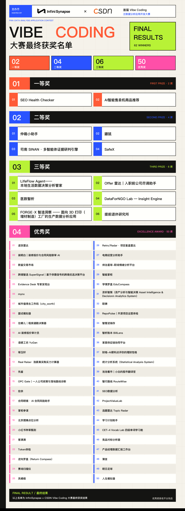

InfiniSynapse × CSDN 首届 Vibe Coding 泛数据分析应用开发大赛，最终结果正式公布。
共 62 席： 2 个一等奖、 4 个二等奖、 6 个三等奖、 50 个优秀奖。一二三等奖品类互不重复；优秀奖排名不分先后。全部作品均已核验：接入 InfiniSynapse API ，且体验链接可打开。
评选维度：场景价值 40% · 技术完成度 35% · 创新性 25%。

首届 Vibe Coding 泛数据分析应用开发大赛 · 最终获奖名单
完整作品长廊持续开放： https://infinisynapse.cn/contest/vibe-coding/gallery
下面按奖项公布名单。每件作品附简要介绍与体验链接，可直接复制到浏览器打开。
⚡ 怎么看这篇名单
一二三等奖按档位公布；优秀奖 50 席排名不分先后。链接如打不开，可先到作品长廊检索同名应用。
1. SEO Health Checker（内容增长）
即开即用的 AI SEO 健康检测工具，提供网页检测与浏览器插件双形态。粘贴任意页面 URL ，几十秒内可拿到标题、描述、规范链接、标题结构、图片 alt 等基础体检，并进一步评估 AI 搜索可见性。
体验： https://aimeetup.center/
2. AI 智能售卖机商品推荐（零售补货）
面向无人零售运营商，围绕售卖机补货与动销做商品推荐和销售分析，帮助判断该补什么、补多少。
体验： https://productselect-production.up.railway.app/
1. 仲裁小助手（法律权益）
输入入职日期、月工资和城市，自动生成赔偿计算单、仲裁申请书、证据清单和法条依据，并结合再就业周期判断赔偿金能否覆盖空窗期。
体验： https://la.tracemuse.top/
2. 鼹鼠（可信数据）
数字核查与可信生成引擎。把周报、 PPT 、底稿里的每个数字，对着数据库或 Excel 底稿重新算一遍，给出带出处的三档结论，并可生成「已核实版」报告。
体验： https://yanshu.octoooo.com
3. 司南 SINAN · 多智能体证据研判引擎（高风险决策）
面向买房、入职、投资等高利害判断。多智能体联网取证，坚持「无证据不立论」：每条结论绑定证据与置信度，并尝试发现隐藏关联。
体验： http://47.119.112.225/sinan/app/
4. SafeX（公共安全）
面向骚扰、跟踪、家暴等安全威胁的公益分析应用。用数据洞察帮助定性与取证，并提供法条引用、 SOS 守护和求助路径。
体验： http://47.94.57.145
1. LifeFlow Agent——本地生活数据决策分析管家（生活决策）
整合餐厅排队、天气、交通、票务和个人偏好，生成可对比方案、看板和报告。支持个人管家、多管家协商和未来时间预演。
体验： https://qiyucai.cn/InfiniSynapse/
2. Offer 雷达｜入职前公司尽调助手（求职职业）
面向学生和跳槽者，在投递、面试或签 Offer 前核验公司主体、舆情和劳动风险，输出可追溯的尽调结论与行动清单。
体验： https://offerradar.cn
3. 医数智析（医疗健康）
患者健康档案 + 医生工作台双端架构。帮助患者把分散的医疗资料存清、看懂，也帮助医生跨时间整理趋势与用药安全。
体验： https://129.204.17.83/agentmedicine/
4. DataForNGO Lab — Insight Engine（公益合规）
给 NGO 项目官员用的合规数据分析工具。本地完成严谨计算，过完隐私与目的限制闸门后，再让 AI 解释「为何差、该怎么做」。
体验： https://dataforngo-lab.swmengappdev.workers.dev
5. FORGE·X 智造洞察（工业制造）
面向 3D 打印工厂。车间主管和工艺、质量工程师可用自然语言追问故障率、材料失败率和成本归属，并回到机台对象上看结论。
体验： https://ivancodes.cn/projects/forgex
6. 提前退休研究所（公共决策）
用统计局、人社部、全国人大决定等公开数据，回答「这届年轻人到底几岁能退休」，并核算城市 FIRE 起步价，结论可溯源。
体验： https://fire.lgbisha.cn
优秀奖排名不分先后。以下按作品报告顺序罗列，方便检索。
1. 退货雷达（经营电商）
帮中小电商从订单和退款数据里找到真正拖累利润的 SKU 、渠道和原因，并给出 7 天止损方案。
体验： https://returnradar.zzyscut.top/
2. 装明白｜装修报价与合同风险联审 AI（生活决策）
上传多家报价单、合同和口头承诺，对齐项目与范围，识别漏项、异常单价和合同风险，并给出三情景成本与谈价清单。
体验： https://zhuangmingbai.hudejing.art
3. 数鉴交易市场（可信数据）
做成「数据验货室」而不是货架：买方只能提经卖方批准的问题，在卖方侧计算，输出可核验的质量证书，数据不出域。
体验： https://dataescrow.suzhouye.cn/
4. 跨境智选 SuperSignal（跨境电商）
输入产品想法和目标市场，自动检索海外需求和国内供给，整理证据、未知项和下一步验证动作，先判断值不值得继续验证。
体验： https://supersignal.kangkona.workers.dev/
5. Evidence Desk 专家发现台（科研学术）
面向科研管理、技术尽调和人才寻访。按研究问题聚合候选专家，展示可追溯论文证据，并给出多源核验入口。
体验： https://experts.threeradius.com
6. mynx（科研工具）
在浏览器里完成 qPCR 分析、 TIFF 批处理和 AI 生物学解读，把专业计算留在本地，把解读交给 Agent 。
体验： https://mynx-web.vercel.app/
7. 城市值得去工作吗（ city_worth ）（求职职业）
把 Offer 与城市房价、落户、通勤、工时收成一站式评估，帮应届生和跨城跳槽者算清性价比。
体验： https://iscityworth.asia/
8. 面试模拟器（求职职业）
基于真实简历和目标 JD 生成拟真 AI 面试官，提供压力面、 STAR 、技术深挖、 HR 行为面等人设，结束后输出评分与复盘。
体验： http://150.158.148.112
9. 住哪儿｜租房通勤决策器（生活决策）
不只看月租，把通勤时间、真实月成本、配套和居住风险压成一张可复核的决策表。
体验： https://guangforent-zhunaer-d3glw67kxb5de30db.webapps.tcloudbase.com
10. AI 装修报价审计员（生活决策）
上传装修报价单，联网核查本地市价，识别常见报价陷阱，并生成谈判清单和漏项检查。
体验： https://reno-audit.vercel.app
11. 语感工坊 YuGan（教育学习）
把段落、金句、词语沉淀成个人语感资产，让 AI 分析学习数据，而不是只生成文案。
体验： https://305758.xyz
12. 琢玉轩（教育学习）
面向中小学教师的 AI 备课工作台，覆盖教案生成与优化、出题、提问链，以及微课视频出品。
体验： https://zhuoyuxuan-production.up.railway.app/
13. Real Raise ：涨薪真实购买力计算器（个人财务）
把税前涨薪拆成到手收入和城市购买力，看清名义涨薪最后能买到什么。
体验： https://plain-wind-ae46.yefuyou2333.workers.dev/
14. 先鉴（教育学习）
长视频学习助手。先判断内容含金量和与个人技能树的匹配度，再给出可跳转的时间码观看路线。
体验： https://peek.antiquelixcheng5413.workers.dev/
15. OPC Gate ｜一人公司政策与落地路线诊断（创业政策）
把分散的政策、园区和算力资源，转成可解释、可追溯的落地建议，并给出风险边界和七日计划。
体验： https://opcgate.com
16. 拾余（个人财务）
不只记账，还指出浪费点、优化方法和省下来的钱去了哪，覆盖欲望冷却、续费管家和闲置回血。
体验： http://47.238.242.89:3001
17. 合同明镜 · AI 合同风险助手（法律权益）
面向普通人。上传或粘贴租房、劳动、消费合同，识别潜在风险并给出改条款建议和沟通话术。
体验： https://ai-contract-risk-assistant.onrender.com
18. 掌柜参谋（经营电商）
加载订单、库存等经营数据后，自动生成经营日报与异常哨兵，每条洞察带证据链和今日可执行行动。
体验： http://82.156.104.3:8399/
19. 北京摆摊点位分析（本地创业）
按所在区、资金、品类和时间匹配北京真实 POI ，输出经营策略卡、 7 日计划和 PDF 。
体验： https://baitan-d7gzhdal4e568e34b-1442581960.tcloudbaseapp.com
20. 小红书种草甄别（消费决策）
粘贴笔记正文，从话术和证据识别疑似营销浓度，输出软广风险分析，辅助判断是不是种草翻车。
体验： https://xhs-ad-detect.onrender.com
21. 客满满（经营电商）
面向小微实体商户的短视频经营增长分析。先算转化、获客成本和 ROI ，再出诊断、脚本、选题和 30 天计划。
体验： https://kemanman1.vercel.app/
22. Token 体检（开发者工具）
给高频 AI 用户看对话浪费了多少上下文，找出重复描述、需求模糊和无验收标准，并给出优化对照。
体验： http://43.132.209.68
23. 逆向罗盘（ Return Compass ）（经营电商）
支持多平台电商退货数据导入，统一分析退货率、退款损失、逆向物流和库存回损。
体验： https://multi-platform-return-loss-diagnosis.onrender.com/
24. 赛场扫描仪（竞赛工具）
把公开作品集装进一个赛场，先看赛道拥挤度和机会指数，再在选题台打磨差异化角度。
体验： http://101.37.80.155:5173/
25. 凤栖梧（求职职业）
面向大学生的 AI 求职陪伴。先接住情绪，再做面试复盘、模拟面、简历诊断和成长图谱。
体验： https://fengqiwu-production.up.railway.app
26. Retro/Radar · 项目复盘雷达（项目管理）
把进度、预算、里程碑和阻塞记录，转成健康度、延期预测、因果链和优先行动清单。
体验： https://retro-radar-2026.vercel.app
27. 电商经营分析助手（经营电商）
不会写 SQL 也能问经营问题。上传真实订单后按探查结果写查询，过程可见，支持多轮追问。
体验： http://120.53.8.28:8666/
28. 帅治星球-职场情绪分析平台（组织人力）
面向 HR 和管理者，把员工心理测评整理成公司、部门、个人三类报告，帮助定位高压力人群并给出关怀建议。
体验： https://shuaizhi.jinxilab.com
29. 智能掌柜（经营电商）
面向美甲、美容、餐饮等小微商家。批量上传收银流水、团购报表和活动材料，用自然语言做跨源经营分析。
体验： https://app-d8bq72qab4zl.appmiaoda.com
30. 学情罗盘 EduCompass（教育学习）
把成绩、考勤、作业和干预记录收在一起，生成画像、趋势、风险预警、周报和个性化干预建议。
体验： http://43.108.11.142:5678/
31. 资析智策（企业经营）
面向企业资产管理人员。把台账、合同期限、使用状态和价值转成健康评分、风险发现和处置清单。
体验： https://asset.312404.xyz/
32. 职牌（求职职业）
上传简历后，用市场数据反向诊断职业身份，输出行动报告和一张可传播的去隐私职牌卡。
体验： http://43.161.226.67/
33. RepoPulse ｜开源项目运营体检（研发生态）
粘贴公开 GitHub 仓库，采集近 90 天提交、 Issue 、 PR 和贡献者数据，给出五维健康分和分阶段行动建议。
体验： https://repopulse-2026.regeditthao.chatgpt.site
34. 智管进销存（经营电商）
给中小实体店用的 AI 进销存。覆盖看板、自然语言查数、单据、盘点、滞销预警和报表。
体验： https://zhiguan-jxc-production.up.railway.app
35. 智析账本 BillLens（个人财务）
上传账单或流水，做消费结构、异常预警、预算和财务健康报告，并支持追问与导出。
体验： http://120.48.158.101:8080
36. 家居供应链协同平台（供应链）
聚合质量异常、交付延期、库存覆盖和供应商表现，支持追踪、分派、复验和 PDF 报告。
体验： https://supply-chain.520resume-doctor.online
37. 财格-AI 犀利点评你的理财性格（个人财务）
轻量理财性格测试。用更直白的点评叫醒「花钱无感」，并生成可分享的报告卡。
体验： https://service.bckf.cn/caige/
38. 统计分析系统（公共数据）
全国口径宏观统计分析应用。覆盖 GDP 、工业、消费、外贸、投资、人口等指标，并提供看板与解读。
体验： https://qu-stat-system.vercel.app/
39. 泡泡看市｜小白的股市翻译官（投资理财）
把当日大盘、板块和热点翻译成更易懂的故事，并提供热力图和问答入口，内容仅供参考。
体验： https://paopaoaii.a273894731.workers.dev/
40. 智行路线 RouteWise（旅行规划）
输入目的地、日期、预算和节奏，生成效率优先、体验优先、预算优先三套可执行路线。
体验： http://47.120.26.69:7890/routewise/
41. SEO 数据分析（内容增长）
把 Search Console 一类流量数据接到可浏览的分析页，方便查看搜索与内容增长情况。
体验： https://gsc-data-analysis.vercel.app/
42. ProjectValueLab（产品研究）
输入项目名称、官网、文档或仓库，梳理市场、用户、技术和商业模式，生成结构化价值报告。
体验： https://pvl.octoooo.com/
43. 选题雷达 Topic Radar（内容增长）
按平台和内容领域调研近期趋势，用热度、竞争度、机会指数评估选题，并给出切入角度和标题建议。
体验： http://120.53.8.28:3000
44. 学习计划助手（教育学习）
填写想学的领域，再上传教材或粘贴教程，自动拆成阶段化学习路线，支持 Markdown / PDF 导出。
体验： https://infinisynapse-new.pages.dev/
45. CET-4 Vocab Lab 四级单词学习舱（教育学习）
面向四级备考。支持词库浏览、自测、薄弱词识别，并生成今日推荐词和复习路径。
体验： https://infinisynapse-cet4-vocab.vercel.app/
46. 竞品对标分析器（产品研究）
面向智能硬件、消费电子、快消等团队，用 AI 做实体产品的竞品对标分析。
体验： http://compbench.zhuangyb.top
47. 产品经理数据汇报工作台（通用分析）
把仪表盘、周报可视化、汇报 PPT 和行研报告收进一个工作台，按步骤完成数据分析交付。
体验： http://8.141.101.70/data-workbench/
48. 簿言（通用分析）
上传 Excel 做结构识别、异常分析和可视化，同时提供记事与轻量记账能力。
体验： https://vibe-coding-boyan.vercel.app/login
49. 明日足球（体育娱乐）
选择比赛后查看比分、阵容、关键事件和战术回放，并一键生成 AI 战术复盘。
体验： https://www.yomujp.top/
50. 人生模拟器（娱乐实验）
用 Agent 批量生成个性化事件的人生模拟体验，偏娱乐向。
体验： https://life-simulator-omega-snowy.vercel.app/
作品长廊： https://infinisynapse.cn/contest/vibe-coding/gallery
感谢每一位把想法做成可上线应用的开发者。
让 Data Infra 创造无限可能。